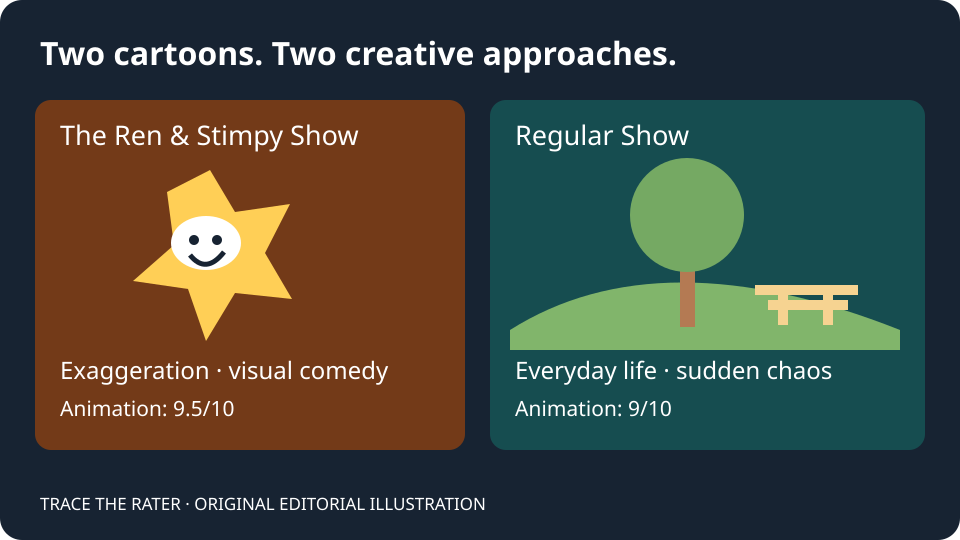
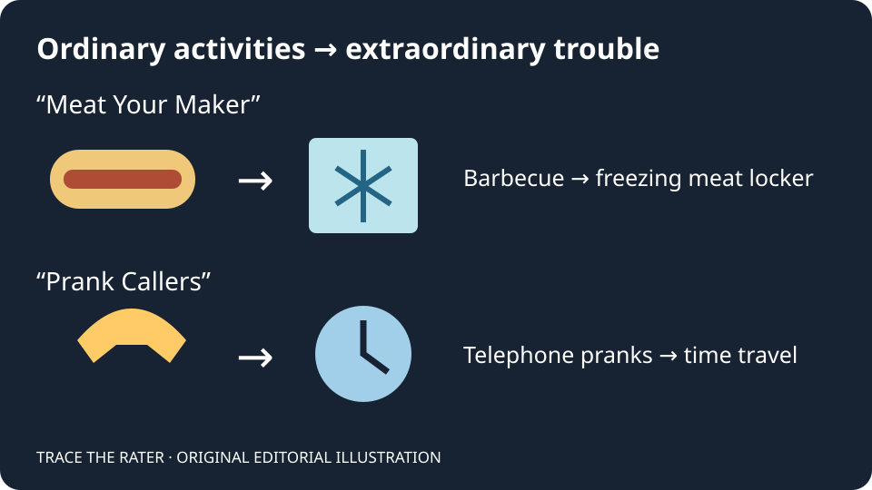
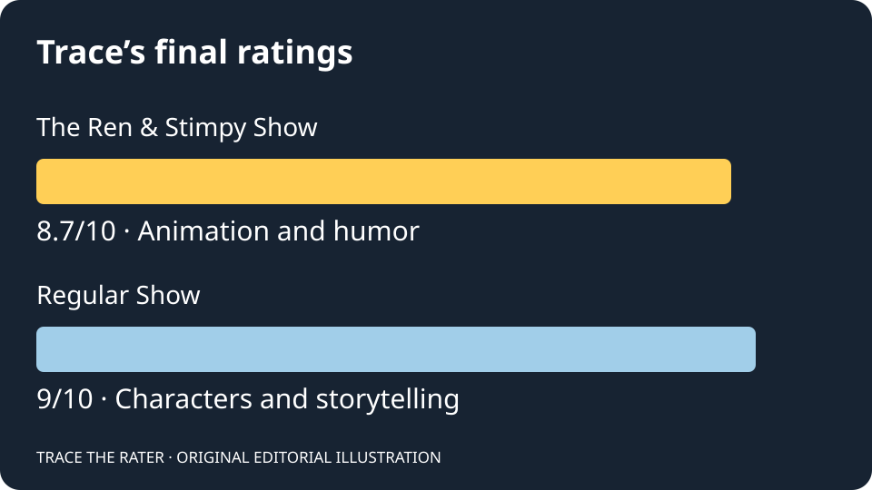

Television · Animation · Reviews · Opinion
Ren & Stimpy vs. Regular Show: Which Cartoon Is Better? My Full Review!
🎬 Watch My Full Video Review on YouTube!
Watch on YouTube if the player is unavailable.
DING DING DING! It's Trace The Rater Time! 🔔🎬
What's going on, everybody? Welcome back to Trace The Rater!
Today, we're diving into TWO animated television shows that I've been watching quite frequently lately: Nickelodeon's The Ren & Stimpy Show and Cartoon Network's Regular Show!
I've always enjoyed exploring different types of animation, especially cartoons that combine creativity, humor, memorable characters, and entertaining storytelling.
However, I recently had a difficult decision to make. Which Nickelodeon or Cartoon Network series should I review next?
Well, I decided to review BOTH!
Although these two shows come from different generations of television animation, they have something important in common: their ability to transform bizarre situations into entertaining experiences.
But which one deserves the higher rating?
Let's find out!
📺 Meet the Shows!
The Ren & Stimpy Show (Nickelodeon)
The Ren & Stimpy Show follows Ren Höek, an easily irritated Chihuahua, and Stimpy, a lovable but rather unintelligent cat.
Together, these two experience ridiculous adventures, unusual jobs, bizarre circumstances, and plenty of hilarious moments.
What makes the original series particularly interesting is its animation style, which draws heavily from exaggerated classic cartoons.
Rather than relying on a complicated storyline or an enormous cast, Ren & Stimpy emphasizes visual comedy, unusual character expressions, and unpredictable situations.
And BOY, does it deliver!
Regular Show (Cartoon Network)
Meanwhile, Regular Show focuses on Mordecai, a blue jay, and Rigby, a raccoon, who work as groundskeepers at a park.
However, instead of consistently doing their jobs, the two frequently entertain themselves, causing all sorts of trouble.
Their behavior often frustrates Benson, their boss, while Pops, the son of the park's owner, is generally much more cheerful and supportive.
Other characters, including Skips, Muscle Man, and Hi-Five Ghost, help make the park an entertaining place.
The interesting thing about Regular Show is that ordinary activities can quickly turn into completely ridiculous adventures.
Seriously, how does something as simple as preparing hot dogs become an absolute DISASTER?!
With those introductions out of the way, let's get into the ratings!

🎨 Animation and Visuals
Ren & Stimpy: 9.5/10
Regular Show: 9/10
Starting things off, I believe Ren & Stimpy has some of the most impressive animation I've seen in a television cartoon.
It's GROUNDBREAKING!
Imagine the exaggerated animation of the 1930s through the 1950s returning during the 1990s.
That's what watching Ren & Stimpy feels like to me.
The facial expressions, character movements, detailed backgrounds, and vibrant colors contribute to its unique visual identity.
Its energetic, colorful presentation reminds me of the kind of vibrancy I enjoy in entertainment such as Wizards of Waverly Place, although the two shows obviously have very different visual styles.
Meanwhile, Regular Show takes a different approach.
Its character designs are relatively simple, but its environments and animation are still extremely enjoyable.
The park and its surrounding city create a relaxing atmosphere whenever things aren't getting completely OUT OF CONTROL!
In fact, I particularly enjoy watching Regular Show while eating some GOOD lunch!
I mean, DUH! The series takes place around a park!
One episode that stands out to me is "Meat Your Maker," in which Mordecai and Rigby's attempts to replace Benson's hot dogs turn into a disastrous adventure involving a freezing meat locker.
The episode demonstrates how the show's visual storytelling can make a simple situation entertaining.
Overall, Ren & Stimpy earns the victory in this category because of its incredible visual experimentation and exaggerated animation.
👥 Characters
Ren & Stimpy: 7/10
Regular Show: 9.7/10
Now THIS is where Regular Show takes the crown!
Although Ren and Stimpy are iconic characters with entertaining personalities, I personally prefer the larger character ensemble featured in Regular Show.
Mordecai and Rigby have one of the most entertaining friendships I've encountered in a Cartoon Network series.
Their interactions are FIRE! 🔥
Of course, their relationship isn't always perfect.
Rigby's decisions frequently cause trouble, while Mordecai sometimes has to deal with the consequences.
However, that relationship helps make their adventures entertaining.
And that's before considering the rest of the cast!
Benson's frustration, Pops' cheerful personality, and Skips' experience all contribute to the show's character dynamics.
I'm still exploring these characters, so there may be plenty of things I haven't discovered yet.
Nevertheless, I'm already impressed!
Ren & Stimpy is enjoyable too, especially because of the contrast between Ren's aggressive personality and Stimpy's silliness.
However, its smaller central cast sometimes makes the character dynamics feel more limited to me.
For that reason, Regular Show receives a significantly higher character rating.
📝 Story and Writing
Ren & Stimpy: 8/10
Regular Show: 9/10
Both cartoons have incredible concepts!
However, I believe Regular Show has the stronger storytelling.
One thing I appreciate is how the writers take ordinary situations and transform them into extraordinary adventures.
Take the barbecue episode, "Meat Your Maker," for example.
Mordecai and Rigby simply need to prepare hot dogs for a park barbecue.
Sounds easy, right?
WRONG!
One disastrous decision leads to another, eventually turning a straightforward task into a completely ridiculous situation.
Another episode that stands out to me is "Prank Callers," which incorporates telephone pranks and time travel.
Seriously, what kind of cartoon manages to make prank calling THAT entertaining?!
This is exactly what I enjoy about Regular Show.
The show can start with an ordinary activity and develop it into something unpredictable.
Ren & Stimpy, on the other hand, often focuses more on its characters' immediate situations and comedic interactions.
Its stories are entertaining, but I occasionally find them a little too simplistic.
That doesn't mean simplistic storytelling is necessarily bad.
In fact, simplicity can sometimes benefit a comedy!
Nevertheless, when comparing both series, I find Regular Show more engaging from a storytelling perspective.

😂 Humor
Ren & Stimpy: 10/10
Regular Show: 8/10
OH BOY!
This is where Ren & Stimpy absolutely DOMINATES!
I cannot emphasize enough how hilarious I find this show.
The exaggerated expressions, ridiculous situations, character reactions, and bizarre sound effects work together beautifully.
And Ren's reactions?!
LEGENDARY!
"WHAT IS IT, MAN?!"
It's the kind of ridiculous comedy that makes classic Nicktoons so memorable.
I particularly enjoy how the show pushes its characters' expressions to absurd extremes.
A simple argument between Ren and Stimpy can become an entire comedic spectacle!
Meanwhile, Regular Show has plenty of funny moments as well.
Its humor frequently comes from the contrast between ordinary situations and increasingly absurd consequences.
However, when comparing the two series based on how consistently they make me laugh, Ren & Stimpy wins.
That's why it receives a PERFECT 10 in the humor category!
And remember, that's a category rating, not an overall perfect score.
🎵 Music and Sound
Ren & Stimpy: 9/10
Regular Show: 9/10
We have a TIE!
Both series have impressive audio presentations, although they excel in different areas.
Starting with Regular Show, I particularly appreciate its music.
The show's outro theme is one of my favorite parts of its presentation.
Whenever I hear it, I feel like I'm watching cartoons from the 2010s and playing video games at the same time!
It's a nostalgic feeling that contributes to my enjoyment of the series.
Meanwhile, Ren & Stimpy has incredibly distinctive sound design.
Its exaggerated sound effects remind me of the classic animation associated with Tex Avery and other influential cartoon creators.
These sounds complement the character movements and visual humor exceptionally well.
Whether it's a sudden reaction, a bizarre expression, or an exaggerated movement, the sound effects help make the comedy even more entertaining.
Ultimately, I believe both cartoons deserve a 9/10 in this category.

🏆 My Final Ratings: Which Cartoon Wins?
After examining animation, characters, storytelling, humor, and audio, here are my final results!
🥈 The Ren & Stimpy Show — 8.7/10
Ren & Stimpy is an outstanding animated comedy with groundbreaking visuals, hilarious character interactions, and memorable sound effects.
Its strongest characteristics are undoubtedly its animation and humor.
Although I occasionally find its storytelling simplistic and its character dynamics somewhat limited, those weaknesses don't prevent me from enjoying the series.
🥇 Regular Show — 9/10
CONGRATULATIONS, REGULAR SHOW! 🎉
You're the winner of this double review!
Regular Show impresses me with its entertaining characters, incredible storytelling concepts, enjoyable visual presentation, and nostalgic music.
Its category scores average approximately 8.94, which rounds to 8.9 when using one decimal place.
However, I'm giving it a final rating of 9/10!
The difference between these cartoons is relatively small, and I still consider both excellent entertainment.
Ren & Stimpy wins in animation and humor, while Regular Show wins in characters and storytelling. Both tie in music and sound.
Ultimately, Regular Show offers a slightly more enjoyable overall experience for me.
📢 Important Update to My Rating System!
Before wrapping things up, I have an important announcement regarding how I'll review entertainment going forward.
I'm officially removing pacing as a separate rating category.
Why?
Because I believe pacing can already be evaluated within animation and storytelling.
For instance, the timing of animated movements can be considered when discussing animation, while the speed and structure of a story can be examined under writing.
Additionally, standout moments will no longer need a separate rating section.
Instead, I'll incorporate memorable scenes, funny moments, musical highlights, and other notable elements into the appropriate existing categories.
This change should make my reviews more straightforward without sacrificing the details that matter to me.
Of course, the categories may still change depending on whether I'm reviewing television, movies, music, or video games.
My goal is to maintain a consistent rating philosophy while allowing each form of entertainment to be evaluated appropriately.
🎬 Final Thoughts: Two Excellent Cartoons From Different Generations
What makes this comparison interesting is how both cartoons approach entertainment differently.
The Ren & Stimpy Show emphasizes exaggerated animation, visual creativity, and outrageous humor.
Regular Show combines everyday situations with unpredictable adventures, entertaining character relationships, and imaginative storytelling.
Both series demonstrate how animation can be enjoyable without following exactly the same creative formula.
And even though Regular Show wins today's comparison, that doesn't mean I'll stop watching Ren & Stimpy!
I'm looking forward to exploring more episodes of both shows and seeing whether my opinions change over time.
After all, reviewing entertainment is about exploring different ideas, discovering new favorites, and sharing personal perspectives!
💬 Join the Conversation!
Now I want to hear from YOU!
- Which cartoon do you prefer: Ren & Stimpy or Regular Show?
- Who is your favorite character from either series?
- What's your favorite episode?
- Which animated series should I review next?
Share your opinions respectfully, because everyone has different entertainment preferences!
🎬 WATCH THE FULL VIDEO REVIEW ON YOUTUBE!
Be sure to like, comment, subscribe, and follow Trace The Rater for more television reviews, movie discussions, music ratings, rankings, and entertainment content!
DING DING DING! IT'S TRACE THE RATER TIME! 🔔🎬
Trace The Rater is an independent entertainment and media brand covering television, film, music, video games, and more. All ratings and opinions expressed in this article reflect my personal experiences and perspectives.